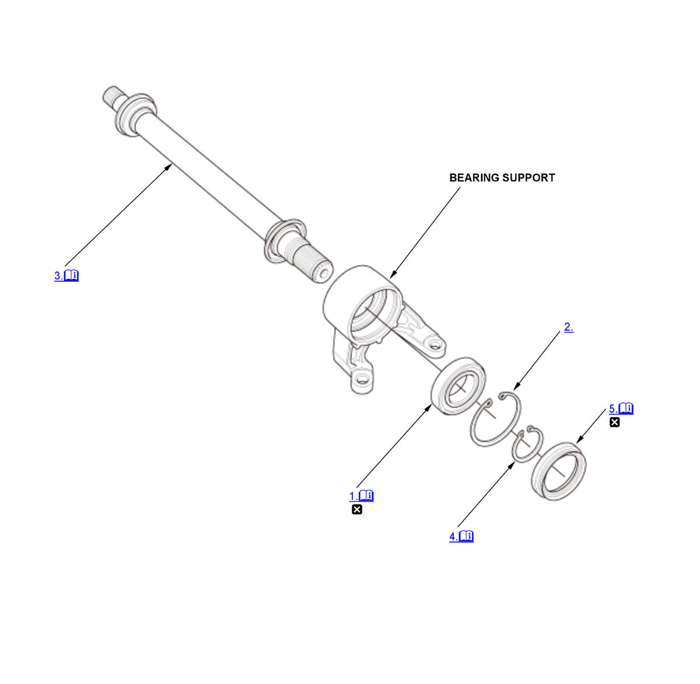

2.0L engine
NOTE:
Numbered call-outs in figure pertain to list numbers in following procedure.
Fig 1: Exploded View Of Intermediate Shaft Components For Reassembly (2.0L Engine - Except K20C1 (M/T) With Intermediate Shaft)

Courtesy of HONDA, U.S.A., INC. |
Detailed information, notes, and precautions |
 |
Replace |
- Intermediate Shaft Bearing - Install
1. Press the intermediate shaft bearing (A) into the bearing support (B) using the 52 x 55 mm bearing driver attachment, the 15 x 135L driver handle, the half shaft base, and a press. - Internal Snap Ring - Install
- Intermediate Shaft - Install
1. Press the intermediate shaft (A) into the shaft bearing (B) using the 35 mm I.D. bearing driver attachment and a press. - External Snap Ring - Install
1. Install the external snap ring (A). - Outer Seal - Install
Install the outer seal (A) into the bearing support (B) using the 40 mm installer attachment, the half shaft base, and a press. Press in the seal until it is 4 0.2 mm (0.16 0.008 in) (C) below the surface of the bearing support end.